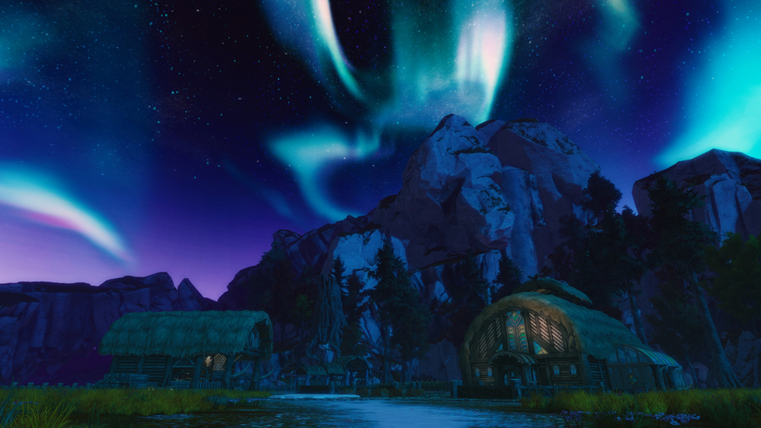

Revving the Reaver...
Revving the Reaver...
What has been put to rest was only made to grow and fester. The city fallen to the blight of the Titans are now needed to be explored to put a stop on the titan's invasion. Janthir's storms rumble as the final stand against the titans arises. Guild Wars 2 DLC Janthir Wilds' final chapter, Absolution, is going to be released soon on June 3. The hidden story of Bava Nisos and it's history is going to be uncovered in this new update.

After the survey teams you helped in the barrens grab their new discoveries, all of them ties to one thing: something worse is happeneing in Bava Nisos. Once the city of Mursaat is now a wasteland of twisted and misleading paths. A gate was opened that allowed the titans to attack forcing them to close their doors for the world to be safe form the titan's infectious spread.
This final update to the expansion is jam-packed with new stuff as well as quality of life updates, check the news for more information including the schedules and incoming updates. Click here!